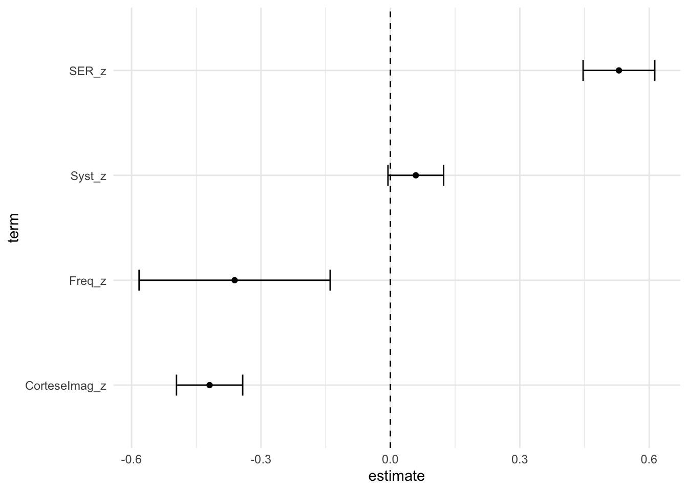
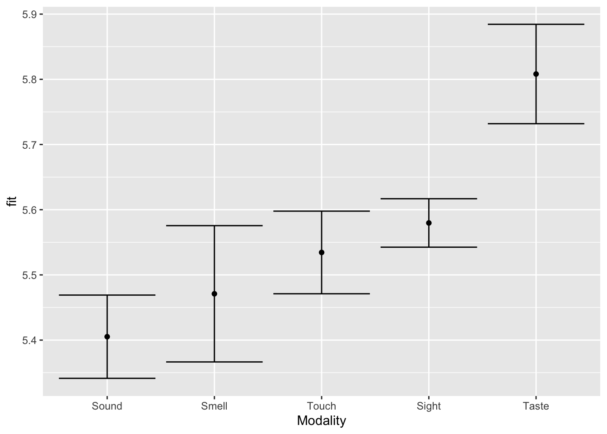
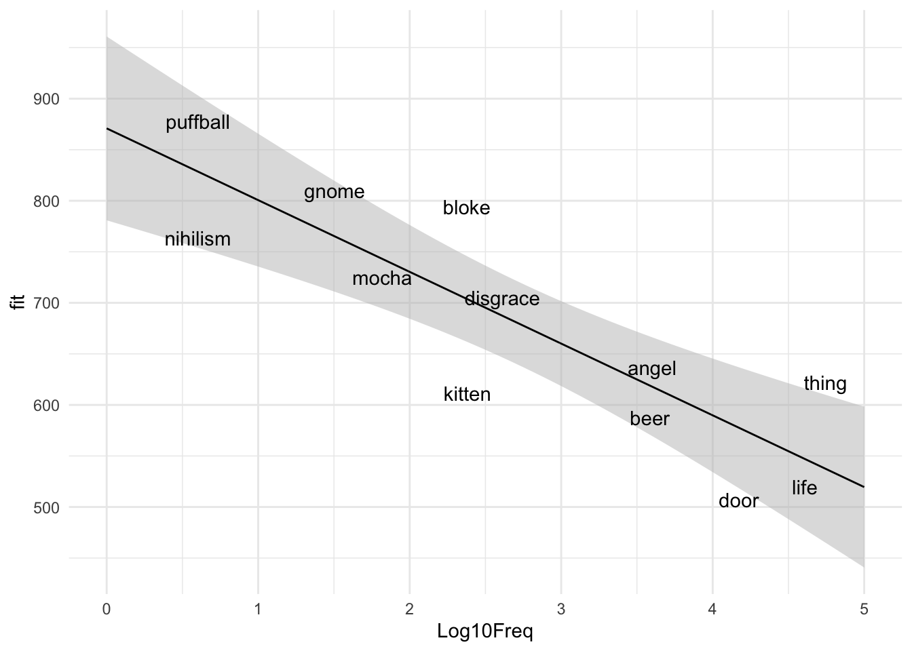

Based on Chapters 9 - 11 of Winter 2020 - Statistics for Linguists.
d = x̅ 1- x̅ 2?/s
Mean of group 1 minus mean of group 2 divided by standard deviation.
Considers the magnitude of the effect (difference in means) and the variability in the data (standard deviation). Grows if the standard deviation is bigger or if the difference in means is bigger
Measure of effect size
d = |.02| -> small effect d = |.05| -> medium effect d = |.08| -> large effect
r = s^2x,y / sx sy
Covariance divided by standard deviations of both groups multiplied together.
Covariance measures the x-distance of each data point from the x-mean and the y-distance of each data point from the y-mean. If a point is much above or much below both, the number grows (or vice versa).
Measure of correlation and/or effect size
SE = s/root(N)
Considers variability in the data (standard deviation) and sample size (root(N)).
Differs to standard deviation because it considers the sample size. Thus it is is the population-level estimate/equivalent of the sample-level standard error.
Confidence intervals show 1.96 standard errors above and below the mean. 1.96 is derived from the 0.05 significance level standard in frequentist statistics.
CI = [x̅ - 1.96 * SE, x̅ + 1.96 * SE]
Confidence intervals will include the true population mean 95% of the time.
Null hypothesis, H0: mu1 = mu2 i.e. Mean of group one = mean of group two, there is no difference between groups (on the population level, which is why we use mu, not x-bar)
The null hypothesis cannot be found true or false. What you measure is the current data’s incompatibility with the null hypothesis.
If you find evidence for the null hypothesis, this does not mean that there is no effect (especially, for example, your sample size is small)
t = x̅1 - x̅2 / SE
Difference in group means divided by the standard error.
The standard error considers the sample size (unlike the standard deviation used in Cohen’s d).
Considers magnitude of the effect (numerator grows if the difference in group means grows), the variability in the data (numerator of the SE) and the effect size (denominators of the SE).
t-statistics can be used to compute p-values. The t-distribution is similar to the normal distribution, just with thicker tails. A 0.05 significance level computes to about t = |1.98|
p-values do not measure the likelihood of the null hypothesis being true or the strength of an effect.
Type I error: getting a significant effect although the null hypothesis is true at the population level – false positive Alpha (α) = the probability of a type I error over the long run / our willingness to accept a type I error
Type II error: failing to get a significant effect although the null hypothesis is not true at the population level – false negative Beta (β) = the probability of a type II error over the long run / our willingness to accept a type II error
Statistical power = 1 - beta (sometimes represented by the pi symbol) Power is increased by having a large sample size, decreasing variability in the data (smaller s), or increasing the effect size.
Type M error: error in estimating the magnitude of an effect (i.e. much larger than it really is), often caused by small sample sizes Type S error: “failure to capture the correct sign of an effect”, often caused by small sample sizes
The more tests you carry out, the more likely you are to commit a Type I error (they all have positive chances, and these add up).
Family-wise error rate: likelihood of conducting a Type I error over multiple tests
FWER = 1 - (1 - 0.05)^k where k is the number of tests.
If you conduct 20 tests, the family-wise error rate quickly shoots up to 64%.
Bonferonni correction: Divide the alpha level by the number of tests. If it is confusing to the audience to see very small p-values that are not treated as significant, you can also adjust the p-values themselves:
p.adjust(0.03, method="bonferroni", n=2)## [1] 0.06If the null hypothesis is true, p-values are uniformly distributed from 0 to 1, so any p-value is equally as likely as any other.
#Application to modeling
library(tidyverse)
library(broom)
icon <- read_csv("data/perry_winter_2017_iconicity.csv")## Parsed with column specification:
## cols(
## Word = col_character(),
## POS = col_character(),
## SER = col_double(),
## CorteseImag = col_double(),
## Conc = col_double(),
## Syst = col_double(),
## Freq = col_double(),
## Iconicity = col_double()
## )icon <- icon %>%
mutate(SER_z = scale(SER),
CorteseImag_z = scale(CorteseImag),
Syst_z = scale(Syst),
Freq_z = scale(Freq))
icon_mdl_z <- lm(Iconicity ~ SER_z + CorteseImag_z + Syst_z + Freq_z , data = icon)
tidy(icon_mdl_z) %>%
mutate(p.value = format.pval(p.value, 4),
estimate = round(estimate, 2),
std.error = round(std.error, 2),
statistic = round(statistic, 2))## # A tibble: 5 x 5
## term estimate std.error statistic p.value
## <chr> <dbl> <dbl> <dbl> <chr>
## 1 (Intercept) 1.15 0.03 33.3 4
## 2 SER_z 0.53 0.04 12.5 4
## 3 CorteseImag_z -0.42 0.04 -10.7 4
## 4 Syst_z 0.06 0.03 1.79 4
## 5 Freq_z -0.36 0.11 -3.2 4Remember what the p-value means: how likely/expected it is that you would find a slope as or more extreme if the true population slope was 0.
Suggestion on how to write up: “SER was positively associated with iconicity (+0.53, SE = 0.04, p < 0.001)” and “for each inncnrease inn nsensory experience rating by one standard deviation, iconicity ratings increased by 0.52 (b = 0.53, SE = 0.04, p < 0.001)”.
mycoefs <- tidy(icon_mdl_z, conf.int = TRUE) %>% #conf.int incluseds 95% conf. intervals in output
filter(term != "(Intercept)")
pred_order <- arrange(mycoefs, estimate)$term
mycoefs <- mycoefs %>%
mutate(term = factor(term, levels = pred_order))
ggplot(aes(x = term, y = estimate), data = mycoefs) +
geom_point() +
geom_errorbar(aes(ymin = conf.low, ymax = conf.high), width = 0.2) +
geom_hline(yintercept = 0, linetype = 2) +
coord_flip() +
theme_minimal()
senses <- read_csv("data/winter_2016_senses_valence.csv")## Parsed with column specification:
## cols(
## Word = col_character(),
## Modality = col_character(),
## Val = col_double()
## )senses_mdl <- lm(Val ~ Modality, data = senses)
tidy(senses_mdl) %>%
mutate(estimate = round(estimate, 2),
std.error = round(std.error, 2),
statistics = round(statistic, 2),
p.value = format.pval(p.value, 4))## # A tibble: 5 x 6
## term estimate std.error statistic p.value statistics
## <chr> <dbl> <dbl> <dbl> <chr> <dbl>
## 1 (Intercept) 5.58 0.02 295. 4 295.
## 2 ModalitySmell -0.11 0.06 -1.93 4 -1.93
## 3 ModalitySound -0.17 0.04 -4.64 4 -4.64
## 4 ModalityTaste 0.23 0.04 5.30 4 5.3
## 5 ModalityTouch -0.05 0.04 -1.21 4 -1.21Reference level: Sight Thus, p-values reflect H0 that the difference between Sight and the given level is 0. Thus, we are missing a lot of info here.
Compare to null model:
senses_null <- lm(Val ~ 1, data = senses) #1 is a placeholder for intercept only
anova(senses_null, senses_mdl)## Analysis of Variance Table
##
## Model 1: Val ~ 1
## Model 2: Val ~ Modality
## Res.Df RSS Df Sum of Sq F Pr(>F)
## 1 404 33.089
## 2 400 28.274 4 4.8145 17.028 6.616e-13 ***
## ---
## Signif. codes: 0 '***' 0.001 '**' 0.01 '*' 0.05 '.' 0.1 ' ' 1Anova “assesses the variance that can be attributed to a factor of interest (such as Modality) against the overall variance”, used here for model comparison.
Here, an F statistic is used, because we are comparing variances (vs. the t-statistic, which is used for group differences and regression coefficients).
Report as: “There was a statistically reliable effect of modality (F(4,400) = 17.03, p < 0.0001)”
Res.Df are the degrees of freedom. The more parameters you estimate, the more df you lose. Here, 400 is the number of independent datapoints. The more complex model estimates 4 coefficients more than the null model.
You can also wrap anova() around the model name to automatically compare it to the null model – you don’t actually have to specify the null model.
glance(senses_mdl)## # A tibble: 1 x 11
## r.squared adj.r.squared sigma statistic p.value df logLik AIC BIC deviance df.residual
## <dbl> <dbl> <dbl> <dbl> <dbl> <int> <dbl> <dbl> <dbl> <dbl> <int>
## 1 0.146 0.137 0.266 17.0 6.62e-13 5 -35.6 83.3 107. 28.3 400Since there is only one predictor here, we get the same output as with the anova. If it were more complicated, you would get the statistics for the full model with all predictors compared to a null model. Basically this asks “how well do all predictors together capture variance in the response?” or “assuming the full model and the null model perform equally well (the null hypothesis), how surprising is the amount of sample variance explained by the full model?”(186)
For all pairwise differences, you can use the emmeans package (see Bodo p.186-188 for info and criticism). On the other hand, if only one of the comparison levels is theoretically motivated, you can lump some levels together and thus perform only one test (p.188-200).
newpreds <- tibble(Modality = sort(unique(senses$Modality)))
sense_preds <- predict(senses_mdl, newpreds, interval = "confidence") #automatically returns CIs
sense_preds <- cbind(newpreds, sense_preds) #adds the label back in
sense_preds## Modality fit lwr upr
## 1 Sight 5.579663 5.542518 5.616808
## 2 Smell 5.471012 5.366477 5.575546
## 3 Sound 5.405193 5.341338 5.469047
## 4 Taste 5.808124 5.731884 5.884364
## 5 Touch 5.534435 5.471052 5.597818sense_order <- arrange(sense_preds, fit)$Modality
sense_preds <- mutate(sense_preds, Modality = factor(Modality, levels = sense_order))
ggplot(aes(x=Modality, y=fit), data=sense_preds) +
geom_point() +
geom_errorbar(aes(ymin=lwr, ymax=upr)) #formatting suggestions p194
ELP <- read_csv("data/ELP_frequency.csv")## Parsed with column specification:
## cols(
## Word = col_character(),
## Freq = col_double(),
## RT = col_double()
## )ELP <- ELP %>%
mutate(Log10Freq = log10(Freq))
ELP_mdl <- lm(RT ~ Log10Freq, ELP)
#generate predictions
newdata <- tibble(Log10Freq = seq(0,5,0.01))
preds <- predict(ELP_mdl, newdata, interval = "confidence")
preds <- cbind(newdata, preds) #add labels back in
head(preds)## Log10Freq fit lwr upr
## 1 0.00 870.9054 780.8520 960.9588
## 2 0.01 870.2026 780.4127 959.9926
## 3 0.02 869.4999 779.9732 959.0266
## 4 0.03 868.7971 779.5334 958.0608
## 5 0.04 868.0943 779.0935 957.0952
## 6 0.05 867.3916 778.6534 956.1298ggplot(aes(x=Log10Freq, y=fit), data=preds) +
geom_ribbon(aes(ymin=lwr, ymax=upr), fill="grey", alpha=0.5) +
geom_line() +
geom_text(aes(y=RT, label=Word), data=ELP) +
theme_minimal() The grey region shows the model lines you would be expected to get 95% of the time when sampling from the same population.